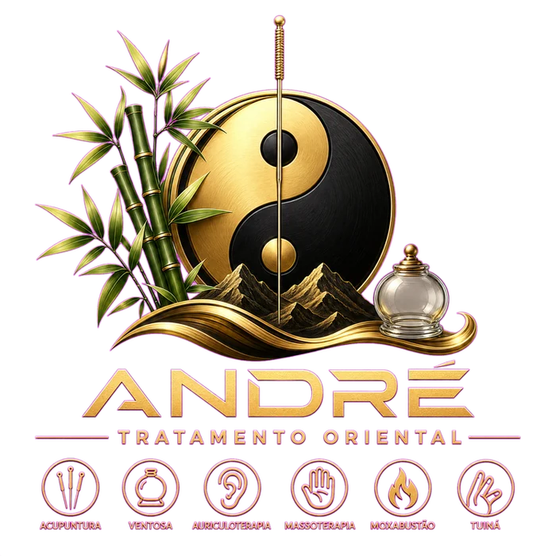

Aqui começa a sua saúde
No André — Tratamento Oriental, diferentes técnicas da tradição oriental são utilizadas de maneira individualizada, respeitando as necessidades e características de cada pessoa.
ACUPUNTURA • VENTOSATERAPIA • AURICULOTERAPIA • MASSOTERAPIA • MOXABUSTÃO • TUINÁ
Uma experiência de cuidado que une técnicas tradicionais, conhecimento e atenção individualizada para proporcionar momentos de equilíbrio, relaxamento e bem-estar.
SEU CORPO PEDE CUIDADO.
SUA MENTE TAMBÉM.
A acupuntura é uma técnica tradicional da medicina chinesa que utiliza agulhas muito finas aplicadas em pontos específicos do corpo.
A partir da visão da medicina tradicional chinesa, esses pontos estão relacionados aos meridianos por onde circula o Qi (energia vital). A estimulação adequada busca favorecer o equilíbrio energético do organismo.
Além da abordagem energética, a acupuntura também é estudada por seus efeitos sobre o sistema nervoso, circulação, percepção da dor e relaxamento.
É uma técnica utilizada em diferentes contextos, podendo contribuir para relaxamento, bem-estar, redução de tensões e manejo de dores, sempre considerando a avaliação individual de cada pessoa.
A ventosaterapia utiliza copos ou ventosas posicionados sobre a pele, criando uma pressão negativa controlada.
Essa sucção provoca uma mobilização dos tecidos na região trabalhada e pode favorecer a circulação sanguínea local, além de proporcionar sensação de relaxamento e aliviar a percepção de tensão muscular.
Na tradição oriental, a técnica também é utilizada como recurso para auxiliar na harmonização e movimentação do Qi e do sangue.
A intensidade e o tempo de aplicação são definidos de acordo com cada pessoa e objetivo do atendimento.
É comum que a ventosa deixe marcas temporárias na pele. Elas fazem parte da resposta local à sucção e tendem a desaparecer naturalmente.
A auriculoterapia utiliza a orelha como uma área de estimulação terapêutica, trabalhando pontos específicos relacionados, dentro de diferentes abordagens, às diversas regiões e funções do organismo.
Os pontos podem ser estimulados por diferentes métodos, como sementes, esferas, agulhas ou outros recursos, conforme a avaliação e a técnica utilizada pelo profissional.
Na visão da medicina tradicional chinesa, a orelha possui uma relação especial com os meridianos e com o equilíbrio energético do corpo.
É uma técnica que pode ser utilizada isoladamente ou como complemento a outros tratamentos, buscando favorecer relaxamento, equilíbrio e bem-estar.
A massoterapia reúne diferentes técnicas de manipulação dos tecidos corporais, utilizando movimentos, pressões e manobras específicas.
O trabalho pode envolver músculos, tecidos superficiais e outras estruturas, de acordo com a técnica escolhida e a necessidade de cada pessoa.
Além de proporcionar um momento de cuidado e relaxamento, a massoterapia pode contribuir para reduzir tensões musculares, melhorar a percepção corporal, favoriser a circulação local e promover sensação de bem-estar.
Cada atendimento pode ser adaptado à condição e às necessidades individuais do cliente.
A moxabustão é uma técnica tradicional chinesa que utiliza o calor produzido pela queima da moxa, geralmente preparada a partir da planta Artemisia argyi (artemísia).
O calor é aplicado de maneira controlada próximo a determinados pontos ou regiões do corpo, proporcionando uma sensação de aquecimento profundo e relaxamento.
Na medicina tradicional chinesa, a moxabustão está associada ao estímulo do fluxo de Qi e sangue, sendo tradicionalmente utilizada para trabalhar padrões relacionados ao frio e à deficiência energética.
É uma técnica que exige controle adequado da temperatura, distância e tempo de aplicação, tornando a avaliação individual fundamental para um atendimento seguro.
A Tuiná é uma tradicional técnica terapêutica chinesa que combina massagem, pressão, deslizamentos, amassamentos e outras manobras específicas realizadas sobre músculos, tecidos e pontos do corpo.
Diferentemente de uma massagem exclusivamente voltada ao relaxamento, a Tuiná possui uma abordagem mais direcionada, utilizando diferentes técnicas de acordo com a avaliação do praticante.
Dentro da medicina tradicional chinesa, busca-se trabalhar a circulação do Qi e do sangue pelos meridianos, favorecendo o equilíbrio corporal.
A técnica pode proporcionar relaxamento, redução da sensação de tensão muscular, maior percepção corporal e bem-estar, sendo adaptada conforme as necessidades de cada pessoa.